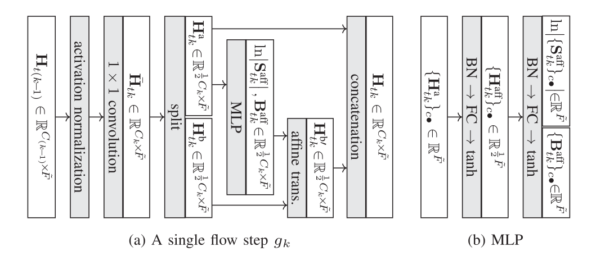

GF-VAE
A. A. Nugraha, K. Sekiguchi, and K. Yoshii, "A flow-based deep latent variable model for speech spectrogram modeling and enhancement," IEEE/ACM Trans. Audio, Speech, Language Process., vol. 28, pp. 1104--1117, 2020.
Abstract
This paper describes a deep latent variable model of speech power spectrograms and its application to semi-supervised speech enhancement with a deep speech prior. Integrating two major deep generative models, a variational autoencoder (VAE) and a normalizing flow (NF), in a mutually-beneficial manner, we can formulate a flexible latent variable model called the NF-VAE that can extract low-dimensional latent representations from high-dimensional observations, akin to the VAE, and does not need to explicitly represent the distribution of the observations, akin to the NF. In this paper, we consider a variant of NF called the generative flow (GF a.k.a. Glow) and formulate a latent variable model called the GF-VAE. We experimentally show that the proposed GF-VAE is better than the standard VAE at capturing fine-structured harmonics of speech spectrograms, especially in a higher frequency range. A similar finding is also obtained when the GF-VAE and the VAE are used to generate speech spectrograms from latent variables randomly sampled from the standard Gaussian distribution. Lastly, when these models are used as speech priors for statistical multichannel speech enhancement, the GF-VAE outperforms the VAE and the GF.

Reference
A. A. Nugraha, K. Sekiguchi, and K. Yoshii, “A flow-based deep latent variable model for speech spectrogram modeling and enhancement,” IEEE/ACM Transactions on Audio, Speech, and Language Processing, vol. 28, pp. 1104–1117, 2020, doi: 10.1109/TASLP.2020.2979603.
Audio Samples
Clean Speech Reconstruction
The following time-domain speech signals are obtained given the power spectrograms reconstructed using the different models and the original clean speech phase spectrograms.
| **Model** | **z_dim** | **M05_445C020A_BUS** | **M06_443C020K_CAF** | **F05_442C020T_PED** | **F06_445C0202_STR** |
|---|---|---|---|---|---|
| Clean | – | ||||
| VAE-2L | 8 | ||||
| VAE-3L | 8 | ||||
| GF-VAE-1 | 8 | ||||
| GF-VAE-2 | 8 | ||||
| VAE-2L | 16 | ||||
| VAE-3L | 16 | ||||
| GF-VAE-1 | 16 | ||||
| GF-VAE-2 | 16 | ||||
| VAE-2L | 32 | ||||
| VAE-3L | 32 | ||||
| GF-VAE-1 | 32 | ||||
| GF-VAE-2 | 32 |
(back to the top of this section)
Random Speech Generation
The following time-domain speech signals are obtained given the power spectrograms randomly generated using the different models and random phase values sampled from a uniform distribution, which then are improved by the Griffin-Lim method (20 iterations).
| **Model** | **z_dim** | **random seed = 123** | **random seed = 456** | **random seed = 789** |
|---|---|---|---|---|
| VAE-2L | 8 | |||
| VAE-3L | 8 | |||
| GF-VAE-1 | 8 | |||
| GF-VAE-2 | 8 | |||
| VAE-2L | 16 | |||
| VAE-3L | 16 | |||
| GF-VAE-1 | 16 | |||
| GF-VAE-2 | 16 | |||
| VAE-2L | 32 | |||
| VAE-3L | 32 | |||
| GF-VAE-1 | 32 | |||
| GF-VAE-2 | 32 | |||
| GF | – |
(back to the top of this section)
Multichannel Speech Enhancement
| **Model** | **z_dim** | **M05_445C020A_BUS** | **M06_443C020K_CAF** | **F05_442C020T_PED** | **F06_445C0202_STR** |
|---|---|---|---|---|---|
| Noisy | – | ||||
| Clean | – | ||||
| VAE-2L | 8 | ||||
| VAE-3L | 8 | ||||
| GF-VAE-1 | 8 | ||||
| GF-VAE-2 | 8 | ||||
| VAE-2L | 16 | ||||
| VAE-3L | 16 | ||||
| GF-VAE-1 | 16 | ||||
| GF-VAE-2 | 16 | ||||
| VAE-2L | 32 | ||||
| VAE-3L | 32 | ||||
| GF-VAE-1 | 32 | ||||
| GF-VAE-2 | 32 | ||||
| GF | – |